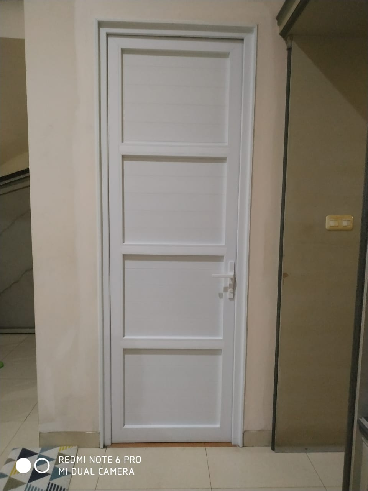
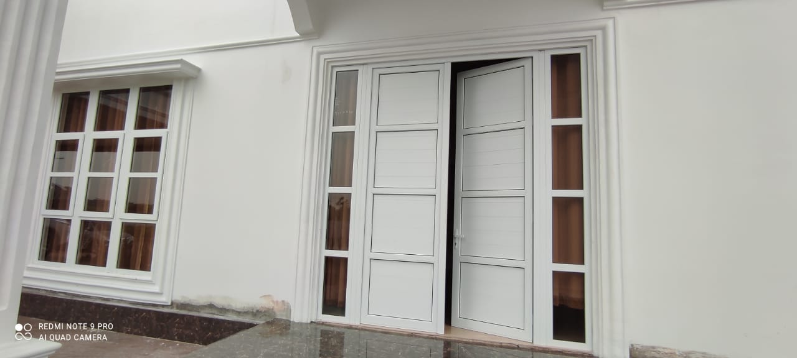

Bidang panel lebih tertutup
Karakter panel dapat dipertimbangkan untuk ruang yang tidak memerlukan pandangan tembus seperti bukaan kaca penuh. Rincian material harus dikonfirmasi.
Pintu UPVC swing panel membuka pada engsel dan memiliki bidang panel sebagai isi daun. Model ini dapat dipertimbangkan untuk ruang yang memerlukan bidang pintu lebih tertutup. Arah bukaan, ukuran, panel, dan perangkat perlu dicocokkan dengan fungsi serta kondisi lokasi, bukan disimpulkan dari foto. Katalog Evan UPVC menyebut sistem multi-point lock sesuai konfigurasi produk. Periksa rincian perangkat pada penawaran; penguncian bukan jaminan keamanan mutlak.

Daun pintu panel berputar pada engsel di sisi kusen. Pencarian seperti pintu panel UPVC atau pintu swing UPVC mengarah pada model berayun ini. Area ayun perlu lapang, sehingga arah buka memengaruhi letak perabot dan akses harian. Berbeda dari pintu geser, model swing tidak memakai jalur geser memanjang, tetapi membutuhkan ruang di sisi ayunnya.
Bidang panel memberi tampilan lebih tertutup daripada daun berkaca penuh. Privasi dan tampilan aktual mengikuti rancangan; bahan inti atau kemampuan insulasi tidak dapat dipastikan dari foto.
Pertimbangkan kebutuhan privasi, jalur, dan pengoperasian sebelum memilih model.
Karakter panel dapat dipertimbangkan untuk ruang yang tidak memerlukan pandangan tembus seperti bukaan kaca penuh. Rincian material harus dikonfirmasi.
Daun terbuka pada engsel dan memberi jalur masuk sesuai lebar rancangan. Arah ayun dan area bebas perlu direncanakan agar tidak mengganggu aktivitas.
Katalog produk menyebut sistem multi-point lock untuk swing panel. Jenis dan susunan perangkat pada pesanan harus diverifikasi, tanpa menganggapnya jaminan keamanan.
Pintu swing panel dapat dipertimbangkan untuk akses ruang dalam bila dimensi dan bukaan sesuai. Pastikan daun tidak mengenai dinding, lemari, furnitur, orang, atau pintu lain. Sisakan ruang untuk pegangan dan penguncian.
Untuk area luar, evaluasi ambang, aliran air, cuaca, dan sambungan pemasangan. Jangan menganggapnya kedap air atau memiliki tingkat keamanan khusus tanpa spesifikasi dan pemeriksaan lokasi.
Evan UPVC memiliki workshop di Bekasi dan melayani permintaan di Indonesia. Survei dan pemasangan bergantung lokasi serta cakupan kerja; sampaikan alamat proyek saat konsultasi.
Rincian final mengikuti hasil ukur dan persetujuan tertulis.
| Aspek | Informasi |
|---|---|
| Mekanisme | Daun berayun pada engsel; arah bukaan dan konfigurasi dibahas sesuai lokasi. |
| Ukuran | Ditentukan dari pengukuran bukaan dan dicatat pada penawaran. |
| Warna dan finishing | Pilihan aktual dikonfirmasi sebelum persetujuan. |
| Panel dan kaca | Isi daun mengikuti rancangan dan kebutuhan ruang; pastikan detailnya tertulis. |
| Perangkat | Multi-point lock tercantum sesuai konfigurasi; engsel, pegangan, dan perangkat lain perlu dikonfirmasi. |
Minta rincian ukuran, panel, perangkat, harga, lingkup pemasangan, jadwal, dan ketentuan tertulis sebelum menyetujui pesanan. Foto adalah gambaran visual, bukan spesifikasi produk.
Gunakan pegangan dan jangan membanting pintu. Periksa area ayun sebelum membuka. Jika daun seret, bergesekan, atau sulit dikunci, jangan dipaksa dan mintalah pemeriksaan.
Bersihkan dengan kain lembut. Jaga engsel dan pengunci bebas dari debu; jangan membongkar atau memakai pelumas yang tidak dianjurkan. Ikuti petunjuk perawatan saat serah terima.
Swing panel menawarkan bidang lebih tertutup; swing kaca meneruskan cahaya; sliding bergeser tanpa ruang ayun. Bandingkan privasi, akses, dan ruang bebas. Ini perbandingan mekanisme, bukan performa.
Foto merupakan contoh tampilan, bukan acuan ukuran, bahan, atau konfigurasi pesanan.

Bahas fungsi ruang dan sisi ayun sejak awal.
Jelaskan fungsi ruang, privasi, posisi pintu, dan kirim foto bila ada. Foto tidak menggantikan pengukuran.
Periksa bukaan, dinding, lantai, arah ayun, area bebas, serta akses pemasangan.
Pastikan ukuran, panel, warna, perangkat, harga, jadwal, cakupan kerja, dan ketentuan tertulis.
Setelah persetujuan, tinjau operasi daun dan pengunci saat serah terima. Simpan panduan perawatan.
Pintu swing panel berayun pada engsel dan memakai bidang panel, bukan kaca penuh. Ukuran serta konfigurasi mengikuti hasil pengukuran dan penawaran.
Model ini menggunakan multi-point lock sesuai konfigurasi. Periksa komponen pada penawaran; penguncian bukan jaminan keamanan mutlak.
Daun memerlukan area bebas pada sisi ayun. Periksa dinding, furnitur, lalu lintas orang, dan kemungkinan benturan sebelum menentukan arah buka.
Warna, finishing, panel, pegangan, engsel, dan pengunci bergantung pada pilihan aktual. Minta rincian tertulis sebelum menyetujui produksi.
Bersihkan dengan kain lembut dan jaga engsel serta pengunci dari kotoran. Jangan paksa daun seret; minta pemeriksaan jika gerak berubah.
Diskusikan kebutuhan, ukur lokasi, lalu tinjau ukuran, arah ayun, panel, perangkat, cakupan, dan penawaran. Proses dilanjutkan setelah disetujui.
Bandingkan pilihan pintu dan jendela sebelum memutuskan kebutuhan ruang.
Ceritakan lokasi, arah ayun, dan kebutuhan bidang panel kepada tim Evan UPVC.